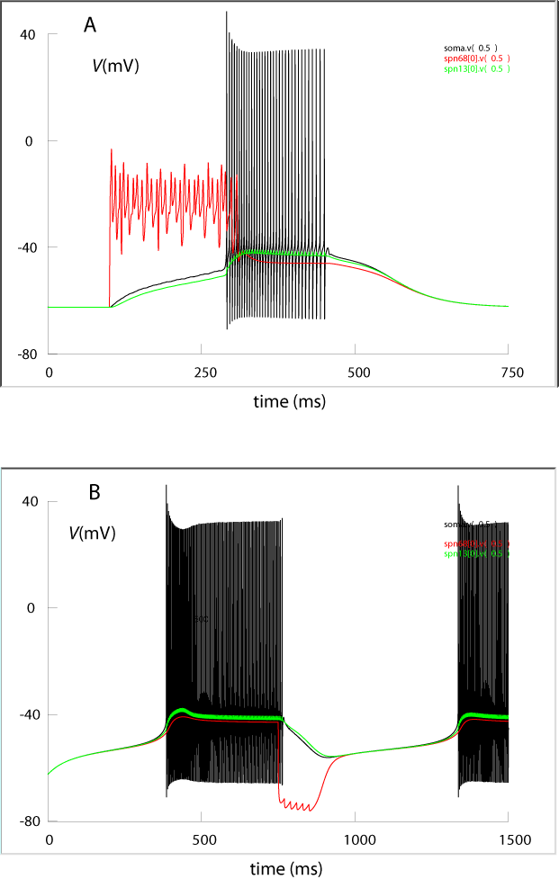

This file documents the content of the genet_Purkinje.zip package:
Simulations of the Purkinje cell (PC) model of the cerebellum investigated in Genet S., Sabarly L., Guigon E., Berry H. and B. Delord (2010) Dendritic Signals Command Firing Dynamics in a Mathematical Model of Cerebellar Purkinje Cells Biophys. J. (99) 427-436.
For more information:
see http://www.isir.upmc.fr/index.php?op=view_profil&lang=fr&id=138
or contact stephane.genet@snv.jussieu.fr
The text assumes that readers may be unfamiliar with Neuron and therefore provides information to quickly adjust parameter values in order to illustrate the dendritic control of somatic firing dynamics in PC. By default, synaptic parameters are set to illustrate the triggering of somatic firing by dendritic plateau potentials.
Model overview
1. The model uses the geometry of a reconstructed PC (Shelton D.P. (1985) Membrane resistivity estimated for the Purkinje neuron by means of a passive computer model. Neuroscience. 14:111–131).
2. It uses a set of four non-linear voltage activated ion currents (see Genet, S., and B. Delord. 2002. A biophysical model of nonlinear dynamics underlying plateau potentials and calcium spikes in Purkinje cell dendrites. J. Neurophysiol. 88:2430–2444):
- IKdr: a classical, non-inactivating delayed rectifier K current
- IKsub: a sub-threshold (with respect to Ca spikes) K current with steep voltage activation
These two K currents are present in both dendrites and soma of the model.
- ICaP: a high-threshold, non-inactivating Ca current, only present in dendrites.
- INar: the voltage-dependent sodium current of Purkinje cell, with its resurgent component, only present in the soma.
3. Internal free Ca2+ ions dynamics is described to account for ECa changes upon activation of ICa during dendritic plateau potentials and spikes.
4. Synaptic currents:
The model splits both excitatory currents of parallel fibers (PF) and inhibitory currents of stellate cells (SC) synapses into
- a tonic component (pf.mod and stellat.mod) uniformly distributed over the dendritic tree,
- a phasic component: (pf_phasic.mod and stellat_phasic.mod) distributed over the membrane of spiny branch #68.
EPSC of the climbing fiber (cf.mod) is distributed only over smooth segments of the dendrites.
(Note: Fig. SM5-1 in the paper can be reproduced by injecting a DC current with an electrode inserted in a proximal dendrite)
Running the model
(Instructions for MSWIN users; for other OS, please check, e.g., http://senselab.med.yale.edu/modeldb/ShowModel.asp?model=116096 or the Neuron software documentation).
After downloading the package, extract the archive to a (new) sub-folder of the Neuron folder. Check if the nrnmech.dll file is in the new folder. Otherwise, Run mknrndll.exe, select the new folder and Click on the 'make nrnmech.dll button'. The nrnmech.dll file should now appear in the sub-folder.
Open the Neuron GUI, then load first the nrnmech.dll file and next the full_CP.hoc file.
Preliminary settings
Verify through the pull-menu Tools→DistributedMechanisms→globalRa that the cytoplasmic resistivity (Ra) is set to 250 Ohm-cm (if not, click on the corresponding left button after entering this numerical value)
Access the soma compartment through Tools→Distributed Mechanisms→Viewers→Shape Name and select the soma: check that ena is set to +60mV; otherwise, do as with Ra.
Visualizing results: use the Graph→Voltage axis sub-menu of the GUI to open a graphic window: right-click on the mouse to make appear a menu allowing the selection of plotted variables.
Numerical settings
In the Tools menu:
select Variable Step Control and click on the Use variable dt (in order for Neuron to use a numerical method adapted to the widely different time constants of the variables in the model)
select RunControl and enter the following parameter values:
- Initial (mV): -62.5 (initial uniform membrane potential close to the resting state)
- Tstop (ms): 750 (total duration of the simulation)
Synaptic settings
display the list of uniform mechanisms using Tools→DistributedMechanisms→Managers→Homogeneous spec. In the newly appearing ShowMechanism dialog box, click the MechType button and select stellat: the conductance value should read 2e-06 (Siemens/cm2) with a reversal potential of -95mV (Hint: parameters of every other added mechanism can be accessed and changed in the same way). Clicking the Run Button in the RunControl box at this step should result in a ~constant membrane potential trajectory whatever selected compartment(s) in the model PC.
-Triggering dendritic plateaus:
After accessing the ShowMecanism sub-menu, select pf_phasic and progressively increase the conductance value. At g=1e-2 Siemens/cm2, a volley of 10 PF EPSC should trigger a dendritic plateau and the firing of Na spikes in the soma as depicted in Fig1.A below.
-Triggering dendritic valleys: begin by increasing Tstop to 1500ms in the RunControl box as this simulation attempts to illustrate two dynamical features of the model: (i) how a depolarizing tonic input switches dendrites to their plateau state, thereby triggering a persistent firing of Na spikes in the model’s soma and (ii) how a volley of SC EPSC can interrupt, beyond its duration, the somatic firing owing to the triggering of a dendritic valley. Respectively set the tonic SC conductance to zero and the tonic PF conductance to 1e-6 Siemens/cm2. Set the phasic SC conductance to 1e-2 Siemens/cm2 with an activation delay of 750ms. As shown in Fig.1B below, the tonic current should switch dendrites to their plateau state and hence trigger sustained firing of Na spikes in the soma. The SC phasic input should trigger a several hundreds of ms duration dendritic valley during which the somatic firing is interrupted.
Fig. 1. Dendritic control of somatic firing dynamics in Purkinje cells.
